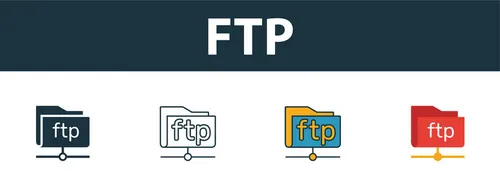

FTP (File Transfer Protocol)
What it is
FTP is a protocol for transferring files between computers over a network. It was one of the earliest internet protocols, developed in the 1970s. Today it is still used, though often replaced by more secure alternatives.
How it works
FTP uses a client-server model. An FTP client (like FileZilla) connects to an FTP server. The user can then upload files to the server or download files from it. FTP uses two separate connections: one for commands (port 21) and one for actual data transfer.
FTP vs SFTP vs FTPS
Standard FTP transmits data without encryption, which is a security risk. SFTP (SSH File Transfer Protocol) is a more secure alternative that encrypts all data. FTPS adds TLS/SSL encryption on top of FTP. For any situation involving sensitive data, SFTP or FTPS should be used instead of plain FTP.
